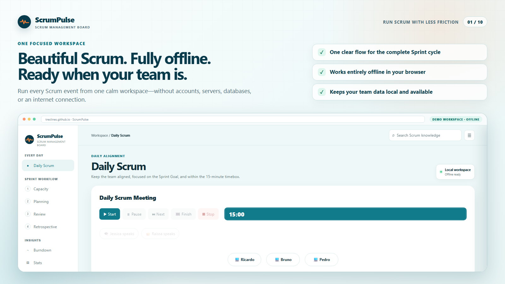

Daily Scrum
Keep the event inside 15 minutes with speaker timing, focused prompts, and visible participation.
Free · Offline-first · No account
ScrumPulse brings Daily Scrum, real team capacity, Sprint Planning, Reviews, Retrospectives, Burndown and practical Scrum guidance into one focused workspace. It runs entirely in your browser and keeps your data local.

The complete Sprint workflow
Use ScrumPulse during the events themselves: understand capacity before commitment, keep discussions focused, and preserve the evidence needed to inspect and adapt.
Keep the event inside 15 minutes with speaker timing, focused prompts, and visible participation.
Account for absences, public holidays, Scrum events and delivery overhead before selecting work.
Order the Product Backlog, check Definition of Ready, build the Sprint Backlog and lock the initial forecast.
Use clear facilitation guidance, timeboxes and accountable improvement actions.
Compare the initial commitment, evolving forecast, actual work and recent team trends.
Search practical Scrum guidance offline and make ownership, DoD and DoR explicit.
A practical flow
Start with who is available and subtract the time the team genuinely cannot spend on delivery.
Move ready Stories, Bugs and Tests into the Sprint and refine the technical breakdown.
Use event timeboxes, Sprint Goals, decisions and improvement actions to keep alignment visible.
Archive the Sprint and use Burndown, velocity and history to improve the next forecast.
Private by design
ScrumPulse does not require an account, hosted database or external service. The local-first design keeps setup small and makes the board useful even without an internet connection.
Facilitator-focused
The board is designed for the person facilitating Planning, Daily Scrum, Review and Retrospective. External Jira or ticket links can still be attached when the team needs them.
Common questions
Yes. The web app is free to use and its source code is available under the Apache License 2.0.
No. ScrumPulse runs in the browser and stores the workspace locally. You can export a JSON backup whenever you need to move or protect the data.
Yes. The application is designed for offline use and has no runtime dependency on a hosted backend.
ScrumPulse is a focused facilitation and planning workspace, not a full issue tracker. Product Backlog items and Sub-tasks can link to external ticketing systems such as Jira.
It is especially useful for Scrum Masters, Product Owners, Developers, Agile coaches and team facilitators who want a simple board for Scrum events and Sprint evidence.
No installation, account or database. ScrumPulse opens directly in your browser and is ready for your team.
Use ScrumPulse for free